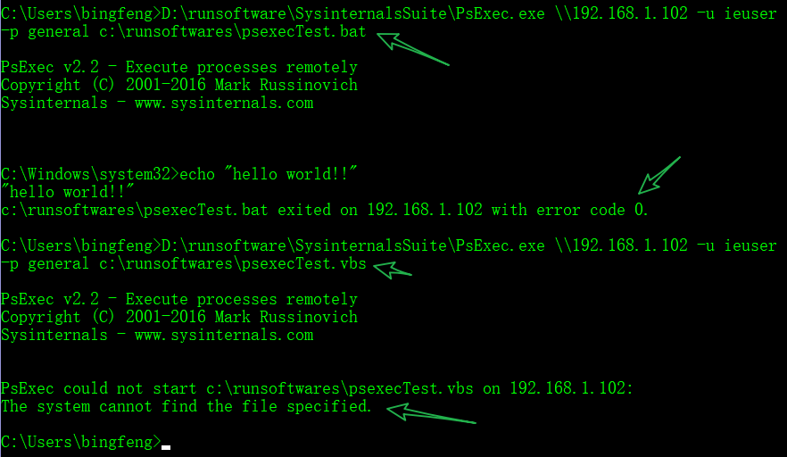

Pstools 只是 Sysinternals 这个工具集中的一小部分。其他可以参考 Windows Sysinternals 实战指南 这本书。
组件
PSTools 本身就有十来个命令行小工具
- PsExec – 在远程计算机执行命令
- PsFile – 查看打开的网络文件
- PsGetSid – 获取 Machine SID
- PsInfo – 查看简要系统信息
- PsKill – 按进程名或PID杀掉进程
- PsList – 列出进程信息
- PsLoggedOn – 显示已登的会话
- PsLogList – 命令行获取 event log
- PsPasswd – 更改用户密码
- PsPing – 简单的tcp/udp连接测试工具
- PsService – Windows 服务管理命令
- PsShutdown – 关机、注销命令
- PsSuspend – 暂停或恢复某个进程
通用功能
以上所有命令都可以直接在本地计算机上使用，不过 PsTools 设计出来就是为了方便对远程 PC 进行管理的。
语法
PsTools 所有工具连接远程计算机都可以使用同一个通用语法，例如：
psinfo \\pc1，pc2，pc3
可以指定一个文件，里面包含多台远程计算机：
psinfo @computers.txt
双斜杠后面可以直接跟计算机名（可以解析 netbios）、IP 地址或 FQDN，也可以在命令后跟多台计算机以实现批量。
如果你不是以域管理员等有权限的用户来执行命令、没有域环境或者需要手动指定有权限的远程用户，可用 -u 参数指定用户，-p 参数指定密码。
如果是域环境，需要将用户写为 DOMAIN\user 样式：
psinfo \\computername –u user –p Password
如果用户名和密码包含空格，需要双引号：
psinfo \\server1 -u "mydomain\admin account" -p "password with spaces"
如果忽略 -p，工具会要求我们输入密码。同 Linux 一样，输入密码没有字符位显示。
需要注意，就算我们指定了凭据，PsTools 也会首先尝试使用当前进程的身份进行验证，只在第一次尝试失败后才会使用指定的备用凭据。
连接排错
- 一些工具要求启用管理用 Admin$ 共享。这就要求启用文件和打印共享（本地的 Workstation 服务和目标系统的 Server 服务），并且防火墙没有阻止文件和打印机共享所需的端口，此外必须禁用 “简单文件共享”。
如果你发现你的命令输入没有错误，但是总是提示 “The network path was not found.”，那你需要执行下面的命令行之后，即可正常执行 sysinternals 的工具。这是因为一些工具要求目标系统的 Remote Registry 服务正常运行。但是在新版 Windows 中，该服务默认并未配置为自动启动。
To start the Remote Registry service via a command line:
sc start RemoteRegistryTo have it start automatically every time:
sc config RemoteRegistry start=auto(重要)To do this to a remote machine named Desktop1:
sc \\Desktop1 config RemoteRegistry start=auto
大部分工具需要具备管理权利。在 Windows Vista 和用户账户控制机制出现前，管理员权利的获取相当简单。如果账户隶属于 Administrators 组，那么该账户运行的所有程序都将具备完整的管理权利。只要使用目标计算机上 Administrators 组的账户成功通过身份验证即可获得远程计算机的完整控制权。
Windows Vista 中引入了用户账户控制，该机制（以及其他多项技术）将同一个用户账户同时视作管理账户和标准用户账户的概念是一种创新。此类账户有时候也被叫做
受保护的管理员。该措施的目的在于用户运行的程序将使用标准用户特权运行，如果希望以完整的管理权限运行程序，则用户必须明确批准进行提升。以用户身份运行的程序不能以编程化的方式批准提升而绕过用户的介入。Windows Vista 还禁止了通过网络环回（Network loopback）进行自动提升的做法。正如微软知识库（KB）文章 951016 所述，如果使用隶属于 Administrators 组的本地账户建立了到远程计算机的网络连接，则该连接只具备标准用户特权。由于这并非是交互式登录，因此无法提升为完整管理员权限。域账户不受该机制限制。
这意味着 PsTools 工具可以使用本地账户非常完美地运行 Windows XP 和 Windows Server 2003 的远程计算机，但无法直接用于管理 Windows Vista 及更新版系统。如果无法使用域账户，可以参阅 KB951016 以了解如何设置
LocalAccountTokenFilterPolicy选项以撤销关于本地账户的这种限制。这种现象体现到操作，就是你提供了正确的管理账号密码，PsTools 还是会提示Access is denied。解决方法如下：Microsoft 官方教程，请参照
How to disable UAC remote restrictions这一部分。其他教程，同上面微软官方的一样。
PsExec
PsExec 是 PsTools 工具系列中最为常用的一个命令行工具，它可以让我们在本地或远程计算机上「运行」任何东西，包括更改注册表、执行脚本或应用程序等。
用法
命令说明:
基本：
psexec \\计算机名 <选项> apptorun.exe <参数>例如你想查看某个远程计算机的 TCP/IP 配置，可以使用如下命令：
psexec \\计算机名 -u User -p Password ipconfig /all如果命令行的 “程序” 部分包含空格，则必须将程序路径包裹在引号中。
如果远程命令行部分包含特殊字符，如管道或重定向字符，则可以使用命令外壳的转义字符，例如 Cmd.exe 的
^或 PowerShell 的反引号 (`) 以防止这些内容被本地命令外壳是做特殊字符。文件输出：
在 server1 运行 ipconfig /all，并将输出重定向至 server1 上的 c:\ipconfig.out:psexec \\server1 cmd.exe /c ipconfig /all ^> c:\ipconfig.out如果不使用转义字符
^，PsExec 命令的输出将被写入本地计算机，而不是远程计算机。如果你将命令输出重定向到一个文件中，可以使用常见的 command.exe > output.txt 方式，这种方式对 PsExec 命令同样适用，例如我们可以使用类似如下命令将 netstat -an 的输出保存到本地文本文件中：
psexec \\计算机名 netstat -an > C:\netstat.txtcmd
一些常用命令，如dir、mklink、copy并非单独的可执行程序，而是内建在 cmd 中。若要运行内建命令，可使用cmd的/c选项在 cmd.exe 运行：
psexec \\server1 cmd.exe /c ver-c选项
如果我们要在远程系统运行的程序并未安装在目标系统中，PsExec 可将其从本地文件系统复制到远程计算机的System32目录，从该位置运行，并在运行结束后将其删除。该选项只能复制单个文件，无法复制依赖的 DLL 或其他文件。如果单独使用
-c，并且目标位置已经存在该文件，PsExec 将不执行文件复制操作。配合使用-f选项可强制复制文件。psexec \\计算机名 -c autorunsc.exe –accepteula-s选项
该选项可以用 System 账户运行目标应用程序。如果同时未使用-i交互式选线，**进程将与其他以 System 身份执行的 Windows 服务运行在同一个非交互式环境（会话 0）中。这种执行模式的优势之一在于就算交互式用户已注销，进程依然可以顺利运行。-i选项
可以用于在目标系统上以交换式方式运行目标进程（有 GUI）。目标系统必须已经登录相对应的用户账号！psexec -s -i regedit.exepsexec -i \\REMOTECOMPUTER notepadBe sure to also use the
-dswitch to disconnect when the interactive window is brought up though. By default， PsExec will wait for the process it executed to complete. If the remote process (Notepad in this case) is kept running， PsExec will never return control.-h选项
在 Windows Vista 和更新版的系统中，“交互” 式登录（如明确提供凭据后进行的登录）会受限于令牌筛选（Token filtering）控制：管理员组会被禁用，管理特权会被移除。在明确提供凭据的情况下，使用-h选项可在远程系统上以用户账户的完整管理令牌启动目标进程。如果目标系统是本地计算机，则只有在用提升模式运行 PsExec 的情况下才可以通过 -h 用提升后的令牌运行目标进程。下图是在非域的环境下，使用管理员账号，有无 -h 的区别：
本地用法
在本地计算机上启动进程也可以使用 -u 和 -p 选项，其效果同 RunAs.exe 类似。同样与 RunAs 类似的是，由于 UAC 的存在，Windows Vista 或更新版的系统上运行的目标进程无法获得完整管理权利，哪怕所用的用户账户是 Administrators 组成员。
对于具体用法，请参考上面的 [连接排错] 部分
跳过第一次打开软件的条款同意声明
psexec /accepteula如果不指定密码，命令行里面会让你输入密码
D:\runsoftware\SysinternalsSuite\PsExec.exe \\192.168.1.102 -u ieuser netstat -na
像 linux 的 ssh 一样使用，远程 Windows
psexec \\wss11 -u 666 -p general cmd
- Do NOT use Ctrl-C to close out of an interactive cmd session. Always use
exit. If you use Ctrl-C， the psexec session will remain running on the remote computer.
例子
psexec 给远程电脑安装软件
psexec \\192.168.2.223 -u administrator -p "" -h -s -c D:\download\Apache_OpenOffice_4.1.7_Win_x86_install_en-US.exe /S /v /qb-p ""：表示密码为空-c：表示复制文件到远程电脑D:\download\Apache_OpenOffice_4.1.7_Win_x86_install_en-US.exe：这个文件是位于本地电脑的/S /v /qb：表示OpenOffice静默安装参数
打开远程机器的IE浏览器
PsExec.exe \\192.168.1.102 -u ieuser -p general -d -i "C:\Program Files (x86)\Internet Explorer\iexplore.exe"-d：表示不等待远端机器执行的结果，命令发送后就立即返回-i：在远程端口开启互动界面(GUI).没有这个参数，你在远程机器上是看不到IE浏览器的，只有后台有一个进程而已后面的IE路径，因为有空格，需要加上双引号
下图为有无参数-d的区别(两个命令都成功打开了IE)
notepad 打开文本
如下两种写法都是可以的:
D:\runsoftware\SysinternalsSuite\PsExec.exe \\192.168.1.102 -u ieuser -p general -d -w C:\runsoftwares -i notepad psexecTest.batD:\runsoftware\SysinternalsSuite\PsExec.exe \\192.168.1.102 -u ieuser -p general -d -i notepad C:\runsoftwares\psexecTest.vbs
其他
运行远程 PC 上的 vbs 脚本报错
运行 bat 没有问题，但是 vbs 会出现 The system cannot find the file specified. 报错。在不同的电脑测试均出现此问题。 目前找不到原因

目前找到该问题的解法，感谢大佬的指路。据说是PATH里找不到执行的文件，在命令里加上 wscript 就行：
D:\runsoftware\SysinternalsSuite\PsExec.exe \\192.168.1.102 -u ieuser -p general wscript C:\Users\bingfeng\Documents\script\vbs\psexecTest.vbs
参数说明
-a
Separate processors on which the application can run with commas where 1 is the lowest numbered CPU. For example， to run the application on CPU 2 and CPU 4， enter: “-a 2，4”-c
Copy the specified program to the remote system for execution. If you omit this option the application must be in the system path on the remote system.-d
Don’t wait for process to terminate (non-interactive).-e
Does not load the specified account’s profile.-f
Copy the specified program even if the file already exists on the remote system.-i
Run the program so that it interacts with the desktop of the specified session on the remote system. If no session is specified the process runs in the console session. Some have reported best results always using the -s switch with -i due to windows being unintelligible.-h
If the target system is Vista or higher， has the proc-l
Run process as limited user (strips the Administrators group and allows only privileges assigned to the Users group). On Windows Vista the process runs with Low Integrity.-n
Specifies timeout in seconds connecting to remote computers.-p
Specifies optional password for user name. If you omit this you will be prompted to enter a hidden password.-r
Specifies the name of the remote service to create or interact. with.-s
Run the remote process in the System account.-u
Specifies optional user name for login to computer.-v
Copy the specified file only if it has a higher version number or is newer on than the one on the remote system.-w
设置进程的工作目录（相对于远程计算机）-x
Display the UI on the Winlogon secure desktop (local system only).-arm Specifies the remote computer is of ARM architecture.
-priority
Specifies -low， -belownormal， -abovenormal， -high or -realtime-realtime
run the process at a different priority. Use-background
run at low memory and I/O priority on Vista.computer
Direct PsExec to run the application on the computer or computers specified. If you omit the computer name PsExec runs the application on the local system， and if you specify a wildcard (*)， PsExec runs@file
PsExec will execute the command on each of the computers listed in the file.-accepteula
This flag suppresses the display of the license dialog.-nobanner
Do not display the startup banner and copyright message.
psexec 工作原理
PsExec goes through a few steps to execute programs on remote computers.
- Create a PSEXESVC.exe file in C:\Windows.
- Create and start a Windows service on the remote computer called PsExec.
- Execute the program under a parent process of psexesvc.exe.
- When complete， the PsExec Windows service will be stopped and removed.
When the process doesn’t work 100% correctly you may have to manually remove the service using the sc command.
https://blog.51cto.com/leomars/1900528
PsFile
- psfile 命令可以显示本地或远程 PC 中通过网络打开的文件，其类似于命令行中的 net file 命令，及 NetworkOpenedFiles 图形界面工具
psfile \\计算机名
- 如果你想中断某个共享的访问连接，可以使用 -c 参数：
psfile \\计算机名 <路径> –c
PsInfo
PsInfo 主要用于显示 Windows 操作系统版本、系统运行时长及个别硬件的简单信息，如果你想获取更详尽的信息，可以使用 -d（磁盘信息）、-h（补丁信息）、-s（已知应用程序版本列表）参数，这样一来就比较像 Windows 内置的 systeminfo 命令行了。
psinfo -d -h -sPsKill
PsKill 看名称就不难猜，它可按进程名或 PID 结束进程，使用 -t 参数可以杀掉整个进程树。
pskill \\计算机名 PsList
它可以通过列表方式看到进程的几乎所有信息，包括线程数
PsLoggedOn
PsLoggedOn 命令主要用于查看本地或远程 PC 上当前登录的用户信息，对于系统管理员来说非常实用。
PsPing
PsPing 是一个可对指定端口进行 TCP 或 UDP 连接测试的工具
PsPasswd
PsPasswd 用于快速更改本地或远程 PC 的用户密码
该命令相较 net user 的好处在于可以一次性批量修改多台计算机的密码，对于域管理员批量重置某些本地账户密码时非常有用
pspasswd \\计算机名 -u User -p Password <账户名称> <新密码>PsSuspend
该命令行工具与 PsKill 比较类似但不是杀掉进程，它主要用于暂停某个进程的工作
要将已暂停的进程恢复到工作状态，只需加上 -r 参数即可
pssuspend \\计算机名 <PID或进程名>PsService
PsService 命令行工具可操作 Windows 中的各种服务，其语法如下
psservice \\计算机名 <操作> <服务名>用的操作有start（启动）、stop（停止）、pause（暂停）、restart（重启），要查看详细参数可以使用 PsService /?
TCPView
TCPView 是用于查看当前 Windows 应用程序和服务连网状态的绝佳工具，通过它我们可以在图形界面中查看到类似使用 netstat 命令输出的大部分信息。
与其它 Sysinternals 工具的颜色标识类似，绿色条目表示刚建立连接、红色表示连接正在关闭，而黄色则表示更改了连接指向
RamMap
RamMap 工具主要用于分析物理内存的使用情况，它以可视化的图形界面进行输出显示。在 RamMap 界面中，你可以查看到非常详细的内存用量，例如：空闲内存、页面缓冲池、非页面缓冲池、已提交和已缓存等条目的详细情况，比任务管理器中的内存显示强大多了。
Autologon
Autologon 可以快速实现Windows自动登录（有登录密码情况下）
在打开之后，只需输入要用于自动登录的账户和密码即可。
其它自动登录的方法
AccessEnum
AccessEnum 是我在做文件夹权限排错时最常用的一个工具，在我们对某个文件夹进行过复杂的权限配置后，AccessEnum 工具可以非常容易帮助我们理清文件夹或注册表的最终访问控制列表。
SigCheck
SigCheck 命令行工具最常用的是 -u 参数，它只报告有问题的文件；-e 参数表示只对可执行文件进行检查。所以，我们可以使用如下命令对 C:\Windows\System32 （或某个其它）文件夹进行快速检查：
sigcheck -e -u C:\Windows\System32在发现异常文件时，可以使用 -v 参数开启 VirusTotal 校验
sigcheck -v -vt <文件名>Contig
contig <文件名>如果你要分析一个文件的碎片而不实际整理，可以使用 -a 参数
du
而 du 是 Sysinternals 套件中的命令行磁盘和文件夹大小查看工具。du 命令行工具的存在主要是因为其显示更为准确，而且在计算空间时不会计数符号链接文件
其中 -n 参数在统计大小时不递归在子文件夹，-v 参数将详细列表显示子文件夹大小（KB），-l 参数可以单独控制子文件夹递归层级（默认为 1）
Disk2vhd
Disk2vhd 小工具可将正在运行计算机的磁盘克隆成 VHD 虚拟磁盘文件，因此它也成为不少虚拟化项目中的 P2V 转换工具
Autoruns
- 粉红色：表示该条目对应的应用没有数字签名、签名不匹配或没有发行商信息
- 黄色：表示该启动条目对应的文件已经不存在了
- 绿色：该功能不太常用，简单来说就是我们可以在使用 File — Save 对启动项目进行导出成 .arn 格式进行存储，之后有可能在 Autoruns 里面对启动条目进行了配置，然后再在 File — Compare 里面载入之前导出的 .arn 文件即可对不同时间和状态下 Windows 启动条目进行对比，对比出来的差异将以绿色高亮进行显示。